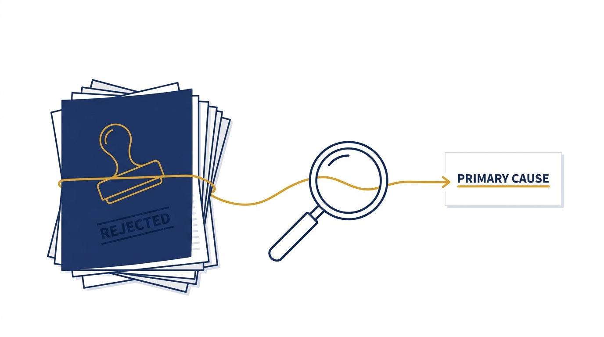
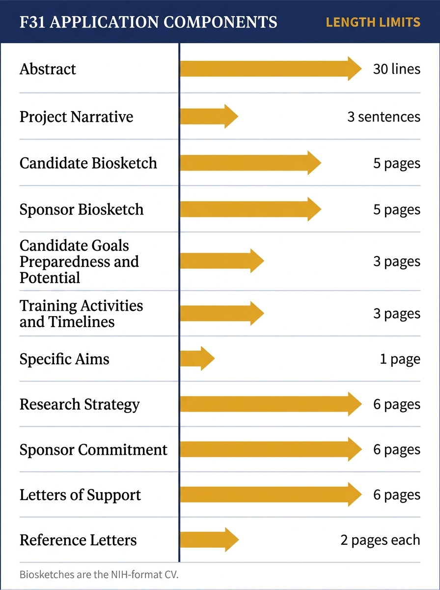
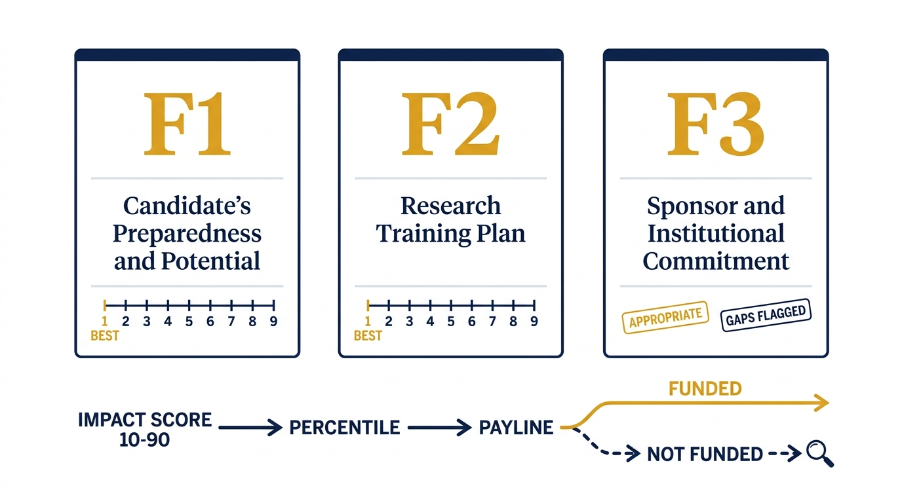
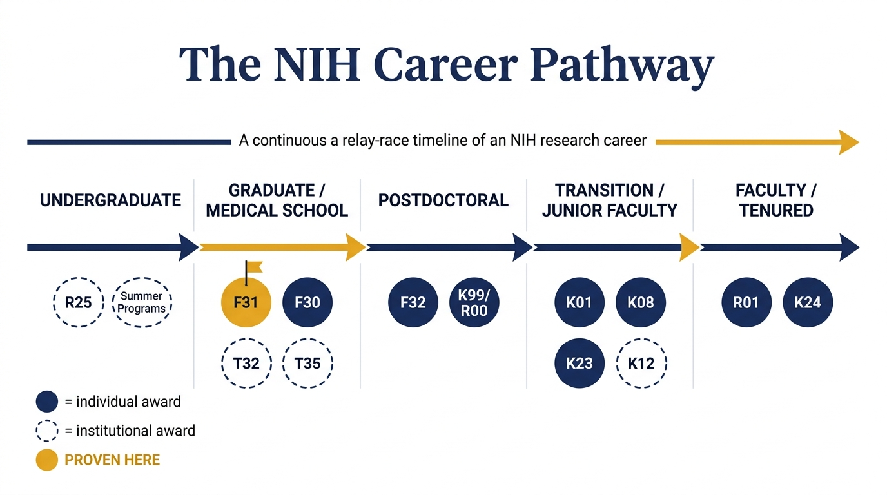
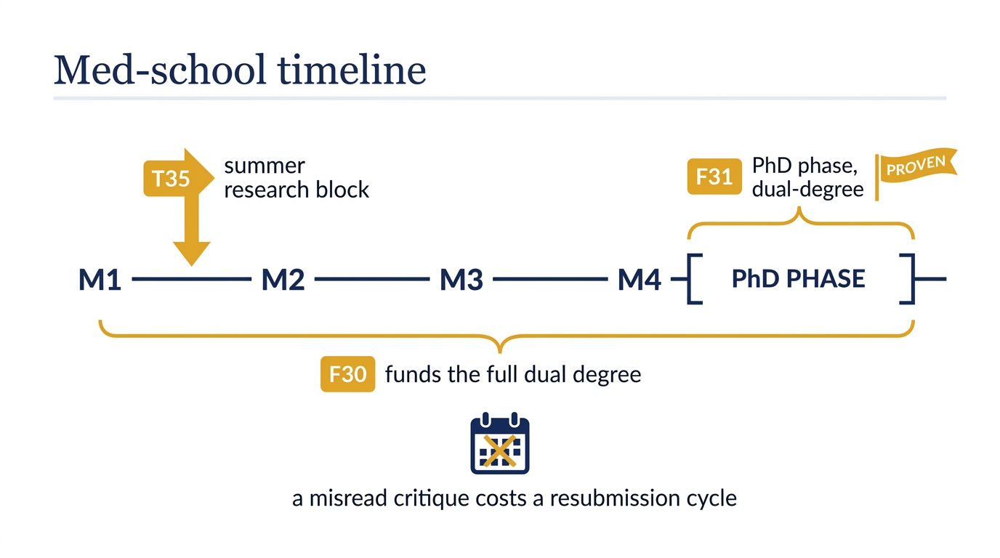

A machine that explains why the grant didn't get funded
Feed it a rejected NIH F31 fellowship application and its reviewer critique. It names the failure mode that sank the application and cites the exact lines that prove it. Plain text and one shell script, verifiable end to end.
01First, what is an F31?
The F31 is a fellowship from the National Institutes of Health that pays for a PhD student's dissertation research, usually two to three years of stipend and tuition support. Around 1,800 of them are active at any time, and the top ten universities hold about 30% of those awards.
Applying is a paperwork gauntlet with strict page limits, and a panel of reviewers scores the result. Most applications are not funded. When yours isn't, you get back a critique document and a score, and it is on you to figure out what actually went wrong. That gap is what this project attacks.

02What the diagnostician does
You hand it an application plus its critique. It runs five stages, each a folder with a written contract for what comes in and what goes out:
- Intake. A questionnaire pins down the basics: which institute, first submission or resubmission, what score came back.
- Extract. Pulls the claims, aims, and reviewer complaints out of the documents into structured records.
- Match. Compares those complaints against a table of known F31 failure modes.
- Verify. Checks every match against the source text. No citation, no match.
- Diagnose. Writes the verdict in plain language. If the critique matches nothing in the table, it says so and refuses to invent a cause. That refusal path has its own test case.
03The paperwork it has to understand
Part of why diagnosis is even possible: the F31 is rigidly structured. Every component has a hard length limit, so complaints can be traced to a specific, bounded document. The bars show each limit relative to the largest.

04How reviewers score it
Since January 2025, fellowship review uses a three-factor rubric. The diagnostician encodes this rubric as a schema-checked JSON file, and its verification gate validates the encoding on every run.

More students entering the pipeline means more fellowship applications, more critiques coming back, and more people staring at a summary statement wondering what went wrong.
05Where this carries over
Nothing in the pipeline is F31-specific except two data files: the failure-mode table and the rubric. The rubric file already declares itself valid for the F30, F31, F32, and F33, because NIH moved all four fellowship types onto the same three-factor review in 2025. Swapping the two data files retargets the whole system.
NIH funds an entire research career as a relay of awards, stage by stage. Each handoff is its own application, its own review, its own way to be rejected with a critique in hand. That makes the whole pathway addressable:

Where it helps most: med school students
The medical-school column is the busiest handoff on that map, and the one this system is built closest to. If you're an MD or MD/PhD student, the awards that fund you are:

- T35 pays for the summer research block, usually after first year. Your school holds the grant; you apply internally.
- F30 funds the full MD/PhD dual degree, both phases. Applied for directly, reviewed on the same three-factor rubric this tool already encodes.
- F31 covers the PhD phase for dual-degree students outside a formal MSTP slot. This is the award the diagnostician is proven on.
A rejected F30 or F31 costs a med student a resubmission cycle, which can mean a full extra year against a fixed curriculum calendar. Reading the critique correctly the first time is the whole game, and that is the exact job this pipeline does. F30 support is a rubric-file swap away.
The nearby pivots, in rough order of distance: the other fellowships (F30, F32, F33) are a config change, since they share the 2025 rubric. The K series and training grants (T32, T35, K12) need a new failure-mode table but keep the same diagnosis shape: bounded documents, a written critique, a payline. Past NIH, any scored funding application fits, from NSF proposals to foundation grants to SBIR submissions. Wherever a rejection arrives with a written critique and a rubric, the intake-extract-match-verify-diagnose chain applies, and the refusal path matters more, since new failure-mode tables start out thin.
That's the value anchor: not an F31 gadget, but a grant-diagnostics pattern, proven first at the F31 handoff and pointed at the rest of the relay.
06Why I think the build is interesting
There is no framework here. The whole system is markdown contracts, JSON with a self-declared schema, and one verification gate in shell. A fresh agent dropped into the repo reads a 42-line entry file and knows where it is and what to do next. That was tested cold, and the transcript is in the repo.
The gate runs 78 checks, and it has a selftest that injects four deliberate defects to prove the gate can still fail. During the build, that selftest caught a real bug in the gate itself: a grep flag that BSD grep silently ignores, which had one check passing on a tree that should have failed. A gate that polices itself earned some trust that day.
README.mdfor how to run it, including the economics of doing so.verify-evidence.txtfor the full gate output and cold walk-test transcript._shared/rules/failure-modes.mdfor the diagnosis table itself.